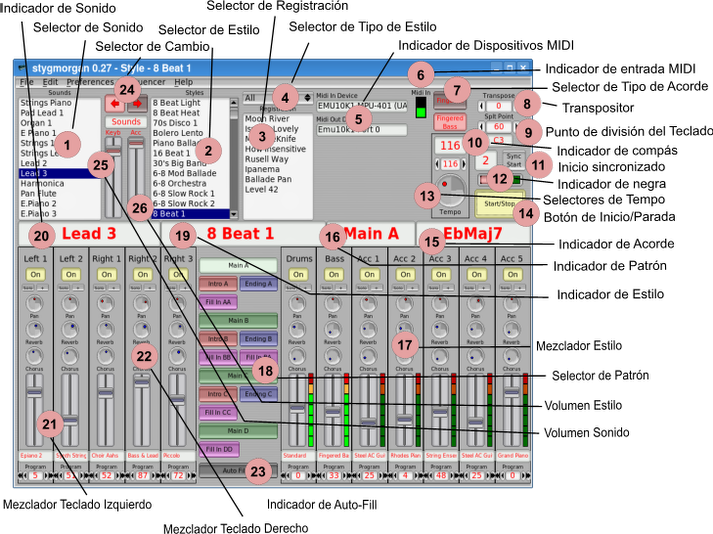
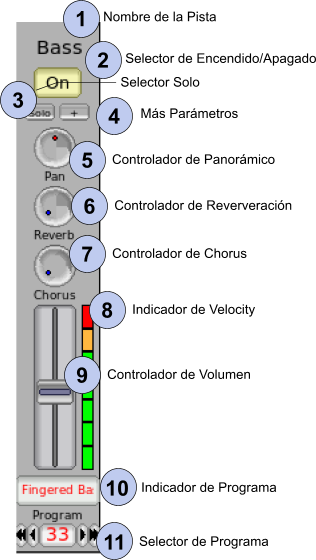
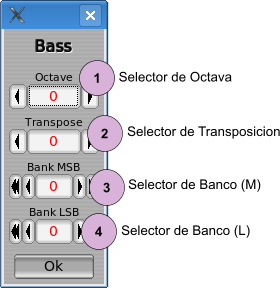
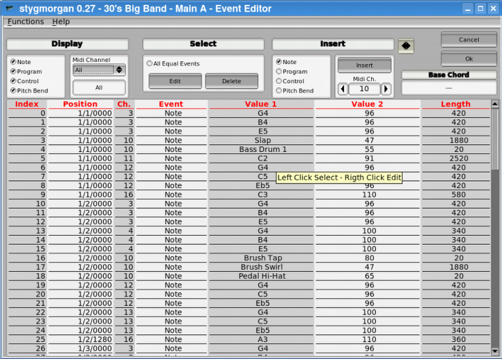
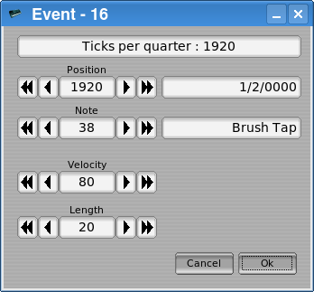
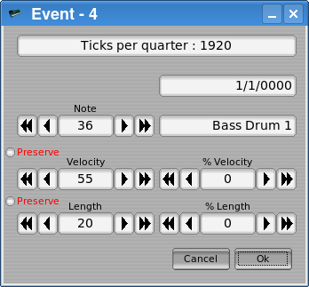
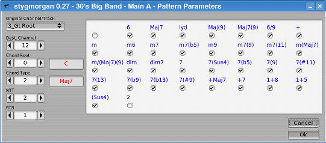
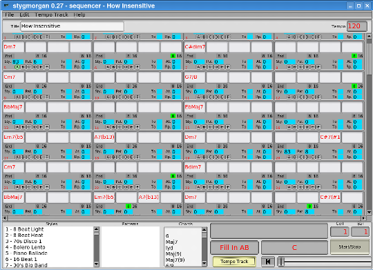
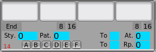
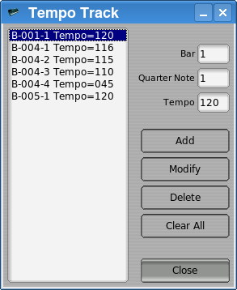

1. Auto Connect ALSA MIDI Devices
2. Use asfload to load soundfonts at startup
4. Maintain Mutes when Pattern Change
1. Styles
2. Sounds
stygmorgan is a arranger emulator a workstation emulator or called with their real name a automatic accompaniment organ emulator.
stygmorgan is a forward step of the older project 'gmorgan' because use real time patterns.
stygmorgan is the acronym of 'style' 'gm' y 'organ',
‘sty’: because can import “.STY” files.
'gm': because the General Midi standard
'organ': because when I was young that was called a Organ. Now is called Workstation or Arranger, and probably they have more complex functions than this program can do.
They are two different parts inside stygmorgan:
The organ, is the program part that convert any kind of midi MIDI keyboard into a automatic accompaniment organ.
The sequencer, is the part where you can create sequences that can be exported as Midi File.
Actually stygmorgan support ALSA and JACK MIDI, and can be used at the same time.
The following diagram show more or less how stygmorgan works.
Linux.
ALSA stygmorgan use the ALSA sequencer always, even when you use a JACK midi connection, then need to be compiled on kernel or loaded as module.
FLTK, Fast Light Toolkit, still fast and light, I know they are some people who don’t like their look, I’m really sorry, but honestly, I don’t know how to use the others.
A MIDI keyboard is needed to play with stygmorgan as a organ, but not needed if you just want use the sequencer..
A Soundfont SF2 Synthesizer, that can be on software or on hardware. .
stygmorgan is delivered with some examples of styles and sounds, and they are General Midi, then the first we need is something that can reproduce this sounds.
To get the best sound with a fast and easy configuration use:
Fluidsynth as a Sounfont software synthesizer. (Available on all distributions).
Qsynth as GUI frontend of Fluidsynth .(Available on all distributions).
MuseScore_General_Full.sf2 as soundfont (Comes with MuseScore3 available on all distributions)
This is enough to have a decent sound, using ALSA audio or JACK audio..
Just need to load MuseScore_General_Full.sf2 on Qsynth and connect the audio and midi ports. For the audio and midi connections they are many applications that u can use, Qjackctl, Carla ... Now you can put the kids to play the keyboard lol :-)
You can really improve this, to get more professional sound using more complex configurations:
My favorite is:
Enabling Multiple JACK Outputs on Qsynth Audio configuration, also Audio Channels to 16 and Audio Groups to 16. That brings 16 stereo audio channels(0~15), one for each MIDI Channel(1~16). On stygmorgan we use audio channels (0~4) for the “Sounds” and (9~15) for the accompaniment, that means MIDI Channels (1~5) for “Sounds” and (10~16) for accompaniment.
Then you can connect each individual track channel to a DAW like Ardour, Reaper or others, actually I’m using Reaper, 12 tracks one per each stygmorgan channel, and 2 tracks for the effects. Routing each track to the effects and control the send level with a customized JS mixer effect added on each effect track. Of course if you just have plan to use the sequencer, just need to connect (9~15).
With this configuration you have EQ and all the effects you want for each channel, I use EQ and Compressor for Drums and Bass tracks, and Impulse Response Reverb and EQ on Reverb track, Stereo Chorus and EQ on Chorus track and of course a Multi Band Compressor on the Master Track. Of course you need to connect stygmorgan midi output to reaper in order to control the Reverb and Chorus effect send level. And is not just the sound improvement, you are also ready to to record MIDI and Audio on the DAW. When the reaper project is ready this is also fast to start to play. Feel free to contact via email if you need the customized JS mixer effect or help to setup,
Of course you can use more simple configurations with just one stereo channels and using Fluidsynth effects channels for the effects. Just using high quality effects and Multi Band Compressor on Master Track really improve the sound.
I was never check any commercial General MIDI soundfont, they are some that look pretty well, and sure can improve sound quality.
But this is not the end :-)
Linux users we have lucky to have the LinuxSampler project. With linuxsampler you really can use big quality samples for each sound, or even still use the MuseScore_General_Full.sf2, also you can configure on linuxsampler the effect sends, then is not needed all the routing and customized mixer on DAW and is more easy if you have plan to use Ardour as a DAW. (Fluidsynt also have effect send channel, but is not plain sound, comes with few internal effect.)
I use linuxsampler with SFZ General MIDI library that I was found on the net, and also with MuseScore_General_Fill.sf2 soundfont, also if you have plan to use just the sequencer of stygmorgan, you can load on linuxsampler big quality samples that really bring professional audio quality. I was never check on a good computer, on my slow one I cant change 10 big samples on the fly. Delay a bit for me, but you can try :-)
The good part is, all of this don’t use so much CPU.
In the beginning of development I was using a soundBlaster Live sound card, with a small General Midi soundfont. If you have a sound card with a 'Wave Table' synthesizer , you will need to load a General Midi soundfont compatible General Midi, on the audio sound card emu10k1 and compatible with the package 'awesfx' <c> Takahasi Iwai, is released on even all of the Linux distributions, also is available on the ALSA website : http://www.alsa-project.org
The command is:
sfxload 'soundfont file'
If you dont use JACK for audio, you can still using Fluidsynth and Qsynth but you need to configure for ALSA, on linux we have another soundfont synthesizer for ALSA called Timidity
The command is:
timidity -j -iA -B2,8
You can configure timidity to use MuseScore_General_Full.sf2 editing the /etc/timidity.cfg adding the following..
soundfont 'MuseScore_General_Full.sf2'
All the styles in stygmorgan was mixed using the MuseScore_General_Full.sf2 soundfont, dont forget this “The same soundfont sounds really different on each soundfont synthesizer”, even is hardware or software, and also depending on what software version. Of course you can use smallest soundfonts .sf2 files, they are really small ones that sounds pretty good. They are also other soundfont synthesizers, all are based on fluidsynth, and comes as LV2 plugin or stand alone program, you can use too. Each one sounds different, believe it, but maybe you will find a good combination that you like using less memory and CPU.
IMPORTANT
The first time you run stygmorgan, a $HOME/.stygmorgan folder is created and filled with a copy of the data. And is this the one you will use to play or edit. Are this files the ones will be updated if you import more styles or delete some existing ones. You will have the original ones always on the folder /usr/local/share/stygmorgan or /usr/share/stygmorgan. The FLTK toolkit store the stygmorgan preferences on $HOME/.fltk/stygmorgan.prefs.
You can always load on Fluidsynth more than one soundfont file. You can specify for each sound change on stygmorgan the bank of sounds to use changing parameters that will be explained later. Just go to the Fluidsynth setup and load all the soundfonts .sf2 files you need.
If you have a emu10k1 sound card or compatible one, giving thanks to Takahashi Iwai and their package awesfx is posible to load many soundfonts at the same time, just you need to specify what bank number you want for each soundfont you add in the following way:
asfxload 8RealGS20.sf2 ; asfxload -b3 'soundfontfile'
8RealGS20.sf2 is a really small General MIDI GS and GM that just have 8 Mb and sounds pretty well.
The second soundfont will go the the bank 3, then in stygmorgan you just need to open the More Parameters window on the channel you want (button +) and put 3 on the MSB value and select the program for that bank. Of course if you want the changes will be permanent on the Style or the Sound you will need to save the style or sound. They are lot of soundfonts banks with single or few sounds with really more quality that you can, and I meant the free ones.
If you do this you will notice that the name of the program don’t appear, this is because stygmorgan is released just with the names of programs on the banks that use MuseScore_General_Full.sf2, if you want to add more soundfont banks with sounds and you want see the names of each preset is needed edit on the $HOME/.stygmorgan the file called GMPresetlist.txt, the file format is:
Bank, Program Number, Preset Name
0 61 Brass Section
If you have soundfonts with lots of presets the easy way to get a preset list is using the utility “sftovkb” that comes with the vkeybd (Vrtual MIDI keyboard package). That bring to you the list on the same format that use stygmorgan, then just you need to add the the file with a text editor, but don’t forget to put the right bank you want , because by default all comes with bank 0.
To load the Chorus and Reverb effects on emu10k1 you need to use the “ld10k1” <c> Peter Zubaj maybe available on many distributions or also you can get here:
With stygmorgan comes the effects I was use when I was using the emu10k1, the bad news is many soundcard use different processor. Then is needed to compile the effects for each soundcard, you can do this with the program 'as10k1' that comes on the 'alsa-tools' package that you can alos get on ALSA website. Just copy all the effects on a folder and execute for each one:
as10k1 'fichero.asm'
That generate the 'file.emu10k1' that are the ones you can load on the sound card memory. After you compile, execute the ld10k1 server like this:
ld10k1 -t8 &
When you have the server running, just copy the script called 'pontodocap' to the folder where you have the 'file.emu10k1' and execute. If you do this and you execute alsamixer you will see the new parameters that appear that are the effect parameters of the effects loaded.
Some third party mixers don’t like you add parameters on fly then you will need to close before run the script then after you can open and also will appear there without problems.
If you want to have this effects permanent you can automatize this at boot, but this depend so much on what Linux distribution you use and is not the purpose of this document. But you need to know that even many new controls appears, other disappear and due the ALSA mixer parameters are stored when u turn off the computer, if you don’t load this effects on the boot process will appears some error messages about this controllers you don’t have, is not a real problem, and they are ways to force ALSA to reload if something fails:
/etc/init.d/alsa force-reload
Or using systemd commands if you use a modern distribution.
CAREFULLY: All of this process of the effects load is not for beginners,you can damage the speakers. Also they are many possibilities that the effects that come with stygmorgan will not work exactly the same on your sound card, this was check om a sblive with the kernel moduleemu10k1: 00:09.0 0401: 1102:0002 (rev 0a) 00:09.1 0980: 1102:7002 (rev 0a).
The command line options are divided in two groups, the ones that bring stygmorgan and the normal FLTK options, this last ones are generic for all the programs that use FLTK and is not the purpose of this document to explain them, you can find the necessary information about this options on the docs of FLTK packages that bring your Linux distribution.
At the start,stygmorgan load the user files that are on your $HOME/.stygmorgan folder, Styles, Sounds Registrations, and also the Preset Name and Drum Note sound files, if you want to use a different file you need to use this command line options, this will load the file you specified an also will be stored as default file on the stygmorgan configuration located on $HOME/.fltk/stygmorgan.prefs.
stygmorgan 0.30 - Copyright (c) 2006-2019 Josep Andreu (Holborn)
Usage: stygmorgan [OPTIONS]
Program Options:
----------------
-h --help Display this command-help.
-a --alsa Just use ALSA.
-l <File>, --load <File> Read styles file.
-d <File>, --sload <File> Read sounds file.
-e <File>, --rload <File> Read registrations file.
-p <File>, --ppreset <File> Load preset program names.
-r <File>, --rpreset <File> Load preset drums note names.
FLTK Options:
-------------
-bg2 color
-bg color
-di[splay] host:n.n
-dn[d]
-fg color
-g[eometry] WxH+X+Y
-i[conic]
-k[bd]
-na[me] classname
-nod[nd]
-nok[bd]
-not[ooltips]
-s[cheme] scheme
-ti[tle] windowtitle
-to[oltips]
Most of the preferences (Files, Window sizes and positions ..) are stored when you exit the program on the folder of each user ($HOME/.fltk/stygmorgan.prefs). Here you can edit many of this preferences.
If you are a Linux advanced user and you are familiarized with MIDI/audio programs sure you will know that they are many programs to connect audio or midi devices, aconnect, aconnectgui, qjackctl, carla ... stygmorgan just auto connect the ALSA MIDI devices to help the not advanced users.
If you enable this option will activate the available MIDI devices browser, stygmorgan will connect at the program startup using the tool 'aconnect' with the selected devices.
This option is just for users with a wave-table synthesizer hardware on their sound card. If you enable the option will activate the browser to select the soundfont file you want to load in the sound card at startup.
stygmorgan use tjos folder to create some temporal files, by default is $HOME/.stygmorgan, you just need to change if you have a dark reason to do it. In this case use the browser button to select the folder you want.
If you enable this option you can assign SysEx messages to manage the Start/Stop button and also the AutoFill button, that activate the input widget.
The SysEx message need to be on the format: F0 43 10 …. F7
That bring the possibility to manage this Start/Stop and AutoFill buttons with your MIDI Keyboard.
This option is to maintain the or not the state of the On/Off of each track when you change pattern. If you enable, when you change pattern you will preserve the On/Off state of the channels on mixer, but if you disable each time you change a pattern all the tracks will go to On.
This options are for dark purposes, sadly not all the soundfonts synthesizers manage the Bank Change in the same way, on FluidSynth you can also configure the way fluidsynth change Banks, but you cant do this on many others, then this options are for help, if you notice that Drum presets or presets on soundfonts you added dont change as you want, you can try enabling this options, you have 4 options, none, BankLSB , Bank TRUCO, or both BankLSB and BankTruco to try the Bank Change works.
The styles is the fundamental part of this program, basically is a set of patterns in a certain muaical rhythm style, selecting one of them you can play on the keyboard the song that you want with a accompaniment based on this musica style, an enriching experience is to interpret the same song by selecting different styles.
Because the number of styles that stygmorgan can store is virtually unlimited and to facilitate their selection on the screen they have been classified in different type of musical rhythms that are detailed bellow:
8 Beat, 16 Beat, Jazz, Swing, Salsa, Disco-Dance, March-Polka, Reggae, Country, World, Ballad, Waltz, Rock, Blues, Shuffle, Brazilian, Funk, Other.
Selecting one of these types stygmorgan will only show on screen the styles belonging to that type, to facilitate the selection.
Each style can have a maximum of 20 patterns, the number of patterns that an .STY file can contain is variable, the patterns are divided into four classes:
Main, Fill In, Intro Ending
The Main patterns are the different variations on the base rhythm of the style, the number of measures that each pattern can have is variable.
The Fill In patterns are the small 'fillings' that are interpreted to change the variation or return to the beginning of the pattern (drum roll ...), the duration of these patterns is limited to one measure.
The Intro patterns are small introductions to the song about the preselected style useful for start the song. In .STY quality files there are usually three, from a simple drum introduction to a much more orchestrated one.
The Ending patterns are for the end of the songs, in fact stygmorgan stops at the end of the interpretation of an Ending pattern, as in the case of the Intro patterns, in the quality .STY files there are usually three, from a simple end to a much more complicated one.
The pattern selection can be done from the MIDI keyboard, the program change “1” on your MIDI keyboard activates the sound or pattern change selection, so once the pattern change is selected, starting from the program change two, all the patterns that the style arranges will be available in the following order Main, Fill In, Intro, Ending and Fill In special.
Each style comes with a predetermined tempo, you can change this tempo with any of the on-screen tempo selectors once the style is selected.
All the parameters, musical notes of each pattern are modifiable with the different editors provided by stygmorgan, so you can always adapt the styles to your preferences.
In the File menu you have the options to delete styles or save the new imported styles, it is important to remember that when you edit a style and accept the changes they are automatically saved.
It is the part that select what will sound when you play on your MIDI keyboard, in each sound both the sound of the left and the right split of the keyboard are stored, for the left part you can combine two sounds and for the right three, adjusting volumes, pan, reverb etc.
The number of sounds is also unlimited so you can save every sound you create.
The best way is to modify the sound until you are comfortable for the interpretation, on that moment, choose the menu option File (New Sound), stygmorgan will ask you the sound name you want to assign it, once assigned the name, save the sound with the option from the File menu (Save Sound) and you will have that new sound available for the future.
The registrations store the necessary parameters to be able to quickly interpret different songs with just a click of the mouse, style number, sound number, pattern, tempo, transposition, etc.
When you have prepared the program to perform a song, do not forget to create a new registration in the File menu and save it, so you can always recover it quickly and you will not need to adjust the parameters again.
Note that the registrations store the general volumes of sound and accompaniment but NOT the changes that you could make in the mixer in the part of the sound or accompaniment, if you need to make changes you should either create a new sound or modify the style leaving those changes saved permanently.

(1) Sound Selector. This list allows you to select the sound you want on your MIDI keyboard with the left mouse button, the sound encompasses the sounds on the right and left side of your MIDI keyboard, the sound indicator (20) will show you the name of the sound selected and you will see that the contents of the Right and Left Keyboard mixer (20) and (21) are modified with the parameters of the selected sound.
Clicking on an item in this list with the right mouse button allows you to rename the selected sound.
Creating new sounds is extremely simple, just modify the mixer parameters until the sound meets your needs, once achieved, in the File menu press the New Sound option, enter the name you want for that sound and press the Save Sound option from the File menu.
If you wish to delete unwanted sounds, select the sound and use the Delete Sound option in the File menu.
(2) Style Selector. This list allows you to select the style you want with the left mouse button. Each style has a preset tempo, the tempo indicator will show the preset tempo value in the style, except when this style change is made with the accompaniment in progress, if you select a style while the automatic accompaniment is running, stygmorgan will respect the preset tempo. .
(3) Registration Selector. This list allows you to select with the left mouse button the one set by default to start the interpretation, very useful to avoid having to adjust parameters continuously.
Clicking on an item in the list with the right mouse button allows you to rename the selected registration.
As with sounds, creating new registrations is extremely simple, once the parameters have been adjusted, when the program is ready to begin the interpretation, choose the New Registration option from the File menu, enter the appropriate name and save with the Save Registration option from the File menu, so you can recover the program layout with a single click.
If you wish to delete any registration you can do so in the File menu in the Delete Registration option.
Note that the record stores the sound “number” as well as the style “number”, if you delete sounds or styles the content of the recordings may be altered.
(4) Style Type Selector. This drop-down menu shows you the list of style types, selecting 'All' shows all, but if you select a specific type in the style selection list, only those that match the selected type will appear.
(5) MIDI Device Indicator. These indicators show you which ALSA MIDI devices are connected to stygmorgan if you have activated the auto connection of devices in the Preferences window.
(6) MIDI Input Indicator. This indicator lights up when MIDI data from the MIDI Keyboard arrives, the indicator measures the 'Velocity sensitivity' of the last played note, and is only for guidance.
(7) Chord Type Selector. These two buttons allow you to select the way that stygmorgan will recognize the chords you play on the left side of the keyboard. The options are:
Fingered Chord: stygmorgan will recognize the chord and interpret the bass in the fundamental note of the chord whatever the inversion of the chord you play on the MIDI keyboard.
Fingered Bass: stygmorgan will recognize the chord and interpret the bass on the low note of the inversion of the chord that you play on the MIDI keyboard.
The recognized chords are:
Maj 6 Maj7 lyd Maj(9) Maj7(9) 6/9
m m6 m7 m7(b5) m9 m7(9) m7(11) m(Maj7) m/(Maj7)(9)
dim dim7
7 7(Sus4) 7(b5) 7(9) 7(#11) 7(13) 7(b9) 7(b13) 7(#9)
+ +Maj7 +7 (Sus4) 2
In all the inversions and some more :)
In Fingered Bass mode the possibilities are almost unlimited.
(8) Transposer. If you are not a great interpreter, the transposer will help you to change the key of the generated sound.
(9) Keyboard split point. Here you select the point of division between the left and right keyboard, that is, between the zone to interpret the chords and the zone to interpret the melodies. The ideal point will depend on the octave extension of your MIDI keyboard.
(10) Bar indicator. This indicator indicates the bar played of the selected pattern, the bar length of the patterns is variable according to the styles, this indicator is useful to know when you need to press the change the pattern buttons, for example in the case of wanting to insert a 'Fill-In'.
(11) Synchronized Start. If you activate this button the accompaniment will begin at the moment in which stygmorgan recognizes a chord, this is useful for example to be able to interpret themes whose melody begins in anachronism.
(12) Quarter Note indicator. It indicates in which quarter note of the bar you are, obviously depending on the numerator of the bar, unfortunately for amalgam bars 5/4 for example or others of greater complication it is not prepared. In compasses of ternary pulse 12/8, 6/8 the triplet is taken as 'quarter note'.
(13) Tempo Controllers. These controllers allow you to adjust the tempo (The speed of the music), there are two to be able to make fat and fine adjustments quickly.
(14) Start / Stop button. This button starts / for automatic accompaniment.
(15) Chord Indicator. This panel indicates the chord that stygmorgan has recognized.
(16) Pattern Indicator. This panel indicates the selected pattern.
(17) Style Mixer. Mixer channels belonging to the automatic accompaniment.
(18) Pattern Selector. These buttons allow you to select the different patterns that contain a predetermined style, the Main patterns are mandatory, you can only select one and always at the time of interpretation there should be one selected except at the time that one of the Ending type is selected, however, if you select a pattern of the Intro type, stygmorgan allows you to select the next pattern that will be played when the Intro pattern is finished.
stygmorgan always interprets the complete patterns, if you select one from the moment it starts it will be interpreted completely, except when you select a Fill-In type pattern, these patterns are inserted in the last bar of the selected pattern, that is, if a pattern It has four bars and you select a Fill-In pattern in bar two, stygmorgan will play it when you reach the fourth bar of the current pattern.
Normally commercial keyboards do not have the possibility to select the Fill-In type patterns, they are usually interpreted automatically if you give the relevant instructions to the device, in stygmorgan this is not so that sometimes makes the pattern selection require more than just one click, nevertheless, it grants some more possibilities than those it has in a conventional keyboard. There is the possibility of emulating the behavior of a commercial keyboard with the button (23) Auto Fill In, what it does is to insert the Fill-In automatically when you change from a pattern of the Main type to another of the same type.
(19) Style Indicator. It is the panel that indicates which style is selected.
(20) Sound Indicator. It is the panel that indicates which sound is selected.
(21) Left Keyboard Mixer. They are the two mixer channels that control the sounds assigned to the left side of the MIDI keyboard.
(22) Right Keyboard Mixer. These are the three channels of the mixer that control the sounds assigned to the right side of the MIDI keyboard.
(23) Auto-Fill In indicator. Activating this stygmorgan button inserts a Fill-In pattern each time you change from a pattern of type Main to another of that type.
(24) Program Change Selector.Select how stygmorgan will behave when it receives a MIDI program change message, the options are Patterns or Sounds, this option is controlled from this controller or with the MIDI program change “1”. Once the behavior is selected is different for each case, in the case of selecting the Stygmorgan Sound option it will change sound when receiving a MIDI program change message (always higher than one), so that the change of program two will correspond to the First sound from the list of sounds and so on. If instead you set it to the pattern option when receiving a MIDI program change message (always higher than one) stygmorgan will change pattern, the program MIDI message number two always matches the Main A pattern. The full assignment It is detailed is:
Program 2 Main A
Program 3 Main B
Program 4 Main C
Program 5 Main D
Program 6 Fill In AA
Program 7 Fill In BB
Program 8 Fill In CC
Program 9 Fill In DD
Program 10 Intro A
Program 11 Intro B
Program 12 Intro C
Program 13 Ending A
Program 14 Ending B
Program 15 Ending C
Program 16 Fill-In AB
Program 17 Fill-In BA
(25) Sound Volume. This slider controls the volume of all the “Sound”, both the left and the right side of the keyboard, that is, the five channels corresponding to the sound. The reason is to balance the general volumes with respect to the accompaniment. Remember that registrations store these values.
(26) Style Volume. This slider controls the volume of the entire automatic accompaniment of the style, the reason is to be able to adjust the overall volume of the accompaniment as each style can be recorded with different volume intensity.

(2) On / Off selector. Also called 'Mute' somewhere in this document, it controls whether this track is played or not, by changing patterns all these selectors go to the On position unless you specify otherwise in the Preferences window.
(3) Solo Selector. Activating this button will reproduce only the content of this track, turning off the rest, deactivating the option the rest of the tracks will return to their previous state.
(4) More Parameters. Pressing this button shows a window with more controllers for the track. See later in this document.
(5) Pan Controller. This controller shifts the sound of the track to the right and left of your speakers, this is achieved through a MIDI control message that is sent to your selected synthesizer (sound source).
(6) Reverb Controller. This controller handles the amount of volume of this track that will be sent to the Reverb effect of your synthesizer (sound source). This send a MIDI control message, observe the synthesizers by Timidty software and Fluidsynth incorporate these effects, you will have to activate them in the program configuration, in the case of the famous audio cards that incorporate a 'Wave Table' synthesizer, the fact of incorporating these effects is not a trivial task, a small guide of how to proceed is explained in the chapter How to Start
(7) Chorus Controller. This controller handles the amount of volume of this track that will be sent to the Chorus effect of your synthesizer (sound source) This send a MIDI control message, observe the synthesizers by Timidty software and Fluidsynth incorporate these effects, you will have to activate them in the program configuration, in the case of the famous audio cards that incorporate a 'Wave Table' synthesizer, the fact of incorporating these effects is not a trivial task, a small guide of how to proceed is explained in the chapter. How to Start
(8) Velocity indicator. This indicator shows you the maximum velocity sensitivity level in each 1/16 subdivision of the bar, remember that velocity sensitivity is not volume, in reality it is simply to indicate if there is activity on the track or not.
(9) Volume Control. This slider controls the volume of the specific track through, as in previous cases, a MIDI control message that is sent to your synthesizer (sound source).
(10) Program Indicator. Shows the name of the program (instrument) selected for this track. These names are obtained from a file with the names of General Midi programs that load stygmorgan at the beginning, if you want to use other types of extra sound banks you must edit this name file, as indicated in the chapter How to Start.
(11) Program Selector. This selector allows you to choose the timbre of the instrument you want for this track, quickly adjust the program number.

(1) Octave selector. Allows you to vary the octave (note height) in which the sounds assigned to the track in question will sound. Useful when importing styles because some sound may not coincide in its octave.
(2) Transposition Selector. It allows you to vary the note within the range of an octave, not so useful :-)
(3) Bank Selector (M). If you have several soundfonts loaded, it is here that you can choose the Bank that corresponds to the program that you selected, the (M) is (Most Significant Byte), what you want to know is that with this control you can choose between the first 127 banks .
(4) Bank Selector (L). If you have several soundfonts loaded, it is here that you can choose the Bank that corresponds to the program you selected, the (L) is (Less Significant Byte), what you want to know is that with this control you select the bank of the value that assign multiplied by 127 plus the value of the Bank Selector (M) that is to say to get the Bank 128 which is where the drum sounds are, you should set the value of this control to 1 and that of the Bank Selector (M ) to 1 also: (127 * 1) +1 = 128 which is the bank of drum sounds in a General Midi soundfont. Unfortunately, not all synthesizers are able to interpret drum sounds on a MIDI channel other than 10 which is the one assigned to the Drum track in stygmorgan.
New sound. Create a new sound in memory, it is not included in the list of sounds until you use the Save Sound option.
Read Sounds. It allows you to choose a new sound file, the sound list will be replaced by the content of the selected file, likewise that file will be saved in the preferences as default. In other words, it will be the sound file that stygmorgan loads when the program starts.
Save Sound. This option is to save the changes you could make to an existing sound, it will save the selected sound in the sound list. If you have created a Sound with the menu option mentioned above, you will add the new sound to the list of sounds.
Delete Sound Delete the sound selected in the sound list. Attention, remember that registrations only store the sound number, if you delete previous sounds it could affect the content of the registration.
Read Styles. It allows you to choose a new style file, the style list will be replaced by the content of the selected file, likewise that file will be saved in the preferences as the default style file, that is, it will be the style file that stygmorgan loads at startup the program.
Save Style. Save a new imported style with the import styles option. The style editors automatically save the modifications that you could make, in fact you should only use this option if you import a style and do not make any modifications to it, because in case of making any stygmorgan it would be in charge of saving it automatically.
Delete Style. Delete the style selected in the style list. Attention remember that the registrations only store the style number, if you delete previous styles these would be affected
Import Styles. This option allows you to add new styles, stygmorgan allows you to choose a new style file, the file formats that stygmorgan recognizes at the time of making this documentation are:
.STY .PRS .MID
Select the type you want to import in the file selection window. The .PRS format is similar to the .STY file, in fact the differences are ignored by stygmorgan.
If you want to import a .MID file you have to know that it must have a special format, that if it did not have, the consequences it can be unpredictable, in fact stygmorgan would not recognize different patterns within the file and would take the whole file as a single-style Pattern. You have an example of a .MID file ready to be imported in the program documentation directory. (50pop.mid). The necessary requirements are simple, you only have to observe three things, the first thing is to put markers with your favorite sequencer program indicating where each pattern begins, the second is that the name of the marker must match the names of the patterns used by stygmorgan , that is to say Main A Main B Intro A Intro C etc, and the third is that the first pattern, the first bar and the duration of a bar need to be called 'SInt', in this pattern you could put the program data and MIDI controls although the latter is not strictly necessary. See the sample file 50pop.mid for more details.
New Registration. Create a new registration in memory, it is not included in the list of registrations, if you want to save it, use the Save Registration option.
Read Registrations. It allows you to choose a new registration file, the registration list will be replaced by the content of the selected file, and that file will be saved in the preferences as default. In other words, it will be the log file that stygmorgan loads when the program starts.
Save Registration. This option is to save the changes that you could make to an existing registration, it will save the selected registration in the registration list. If you have created a new registration with the aforementioned menu option, you will add the new registration to the registration list.
Delete Registration. Deletes the registration selected in the registration list.
Load Instrument Names. If you want to use stygmorgan with a sound source that is not General Midi compatible, or you want to add new sounds in new banks, you should edit the instrument name file as explained in the section 'How to improve the sound' of the chapter “How to start”. This menu option allows you to select the instrument name file that will be used by stygmorgan, it will also save the file you select in the preferences as default and load it with this menu option.
Load Drums instrument names. stygmorgan only uses the drum instrument names file in pattern event editing, if you wish to use stygmorgan with an unsupported sound source General Midi should edit this file if you want stygmorgan to show you the instrument names in the event editor window will also save the file you select in the preferences as default and load with this menu option.
The event editor allows you to modify, delete or insert new events in the selected pattern. The format in which stygmorgan stores the styles allows a pattern to have 16 different tracks (Instruments) although simultaneously only seven are played, but you can have one or the other tracks played depending on the selected chord, for this reason each track has a MIDI channel of origin and one of destination.
This editor always works with the source MIDI channel, when we select a pattern and choose to edit it with this editor you have to understand that all available tracks can be edited, in the pattern editor you can find out which destination MIDI channel each source MIDI channel

Display Section
The Display section allows us to select which events will be displayed, there are two selectors, the drop-down menu that selects the MIDI channel, and the event type selectors.
The MIDI channel selector offers the possibility of displaying either an individual channel, or all of them, or the Drum channels, remember that in order to make the program compatible with the emu10k1 sound cards, the percussion channels are added to the drums on their MIDI output channel. Remember that the channels shown are the source channels, in this case the percussion tracks that are normally in the source channel 9 when playing are added to the destination channel 10, well in that case if you select the option in the menu 'Drums' would show the events of channels 9 and 10.
Selecting a channel the event list will show all the events of the channel unless we use the event type selectors to display. These are Note, Control, Program Change, Pitch Bend.
Select Section
The selection section gives us the possibility to either select an individual event or by checking the option 'All Equal Events' select all the events similar to the selected one.
The 'Delete' button deletes all selected events.
Once the desired events have been selected press the Edit button to open the editing window. If you wish to edit an event individually, you can also open this window by clicking on the list of events with the right mouse button on the desired event.


This window has different parameters for each type of event, if they are not familiar to you, I recommend you read a manual about the MIDI protocol. Depending on whether you edit an event individually or if you edit multiple selected events, the parameters in this window will change. In the example, the first window edits an event individually, here you can edit the position of the event in the pattern. The upper legend tells you the resolution with which the pattern is created. In the second example window multiple selected patterns are edited, in the type of event of the example modifying the note, the notes of all the selected events will be modified, observe the two boxes called 'preserve', you will notice that they only appear when editing multiple events , its function in case of activating them is to preserve the velocity and the original duration of each event even when the note is modified, if they were not activated, the velocity and the duration of the original event would be copied for each event. Obviously this has several possible combinations to allow you to edit each parameter preserving the others or not.
The “% Velocity” parameter adds a percentage to the velocity value of each selected event, that is, preserving its value and adding a percentage of it, very useful if for example you wish to increase the volume of a specific drum instrument for example,
The “% Length” parameter adds a percentage to the value of the duration of each selected event, that is, preserving its value and adding a percentage of it.
Insert Section
It allows you to insert events in the selected position, you can select the type of event as well as the MIDI channel of that event, the events are inserted with default values that you will have to edit later.
Chord Base Section
It informs you of the base chord with which this track was performed, you will notice that many patterns have tracks based on different chords. If you activate the button with the speaker, you can listen to the selected events.
Function Menu
This functions are not always activated, some are just activated in case you edit drums channels, and other in case that the channels you edit aren’t drum channels.
Brush (XG-> GM) This function has been implemented to help in the event that you imported a style file made for the XG format, unfortunately the GM (General Midi) format although much more generalized, does not contain many of the sounds that if it contains the XG format, this function tries to find equivalences for some sounds because this problem is exacerbated in swing patterns that use brushes (Brush), a typical case would be that you have imported a swing pattern performed in XG and on the drums you hear some galactic sounds that certainly do not belong to that style of music. This function solves that problem, you just have to edit the battery program in the mixer of that pattern by placing it at number 40 (Brush), open the event editor and execute this function. Unfortunately the equivalences do not have an appropriate volume, so you will probably need to make a multiple selection of the new sounds and adjust the volume with the% Velocity parameter.
D1_Db1 to Ride. Converts all the D1 and Db1 orphan notes on drums tracks to the Ride Cymball 1, All in that pattern.
HighQ to Low Floor Tom. Converts all the HighQ entries on this pattern to a Low Floor Tom.
They are some others functions like this last ones that … is same but changing the source and destiny, that is explained on their self name.
All Notes 20% +Volume. This function is for not drum tracks, and do what say on their name, Increase the velocity sensitivity for all the notes on the selected channel in the pattern selected.
Also they are different option 20% -Volume, 50% +Volume, 50% -Volume, this options are useful when you import a style, in some cases, the recorded velocity sensitivity on style patterns is so low, probably because the preset for the instrument has high volume, then here you can adapt to the synthesizer you use.
On drums tracks you can do the same with the Drum Note Mixer, more easy.
This window allows you to select to which style patterns you want to copy the layout of the style mixer. Very useful if you import a pattern and want to modify the sounds or adjust the volumes.
This window allows you to edit some parameters for each track of a pattern.

In the drop-down menu you can select each track, note that the source MIDI channel is placed before the name of each track. Once you have selected the track in the right panel, you can assign the track playback or not for each type of chord recognized by stygmorgan.
You can also define the Chord Root (tonal center) and type Chord Type that is assigned to that track and which stygmorgan uses for the harmonization of the track with respect to the chords that you could play on the MIDI keyboard. Obviously these parameters should not be modified if what you edit is simply small variations in the notes of the tracks, another case would be if you intend to generate a new pattern or above all and very important if you import a style from a .MID file, stygmorgan creates a default table of values in the case of importing a .MID file and it could be the case that you need to modify these values.
At the time of writing this document stygmorgan is far from reproducing the styles with the same behavior that a commercial musical keyboard would have. The implementations of the NTT and RTR parameters are not complete. You should not worry too much in the case of importing styles of these values, in addition stygmorgan uses its own techniques for any of these aspects, the fact of incorporating the drum sounds in order to make them compatible with emu10k1 sound cards and compatible makes some of the possible values of these parameters unimportant because stygmorgan already recognizes whether the instrument is fixed harmonization (battery case ...) or not. Below are the values that you should consider and the mode of operation of stygmorgan if you find those values.
NTT = 2 + RTR = 1
The track that contains these values, usually tracks with harmonic instruments, piano, violins ... in case you change the chord on the MIDI keyboard, you will interpret that chord regardless of the content of MIDI events (musical notes) of the track. With this it is achieved that although the track could contain for example a violin chord of four bars, in case you change the harmony, the harmony will continue to accompany you.
NTT = 3 + RTR = 2 + MIDI Channel = 11
Note that the MIDI channel eleven normally corresponds to the Bass track, what stygmorgan does on that case is is play the fundamental of the chord after you changed the chord on the MIDI keyboard.
Note. The implementation
of the functions of NTT and RTR is not partially completed by the
lack of information not of the functions that the values assigned
to these parameters imply but by the absolute ignorance of the
harmonization techniques of the pattern notes with respect to the
chords interpreted on the MIDI keyboard that use a commercial
keyboard, stygmorgan has implemented its own technique and this makes
most of these functions assignable to these values make no
sense. Even so, many interesting functions remain to be implemented,
work that I hope can be completed in future versions of stygmorgan.
Note about the Note, Then
years after we still same. Maybe when Microsoft will release the
Window source code :-)
This window allows you to rename, classify the style into one of the default types and select the specific tempo of the style.

The sequencer allows you to create song bases using stygmorgan styles, just by entering the chords of the song and the repetitions of the different parts of it. The design differs from the linear style of a normal sequencer, and is aimed at facilitating the introduction of chords, for example, from a score of a song. It is really easy to introduce a script of chords of a song and its different parts, in less than two minutes you can have a quite acceptable base with which to practice improvisation or export it to Midi File format to later be able to develop it in a conventional sequencer.
The sequencer window has four main parts:
1. The list of cells.
2. The general parameters of the song.
3. Information indicators.
4. Position and operation controls.
The Cells

The sequencer has 128 cells, each cell is equivalent to one measure of the song, the number of chords you can enter in each measure depends directly on the style selected for that measure, the chord input dialog boxes will be activated or deactivated in relation to the compass numerator of the selected style for that cell depending on whether it is 2/4, 3/4, 4/4 etc.
The style is selected in the Sty entry, click there and you can either enter the style number from the computer keyboard or by dragging with the mouse. When entering the style you will see that the list of styles at the bottom of the window changes, this list of styles is only to inform you which style corresponds to each style number. When you select a style automatically the pattern will be set to '1'.
The pattern is selected in the same way as the style, in the Pat entry. You see that the list at the bottom shows you the available patterns for the selected style and their corresponding numbers, as in the case of the style is purely informative.
It is not necessary to enter the style and pattern number for each cell, if you want to keep the style and / or pattern with leaving those values in the following cells to zero, they will reproduce the last selected style / pattern. If you only intend to make a pattern change, it is not necessary to enter the style number, you can leave the style at 0 and enter the desired pattern number.
Once the pattern style has been introduced, we are ready to enter the chords in the white chord input boxes, at the bottom of the window and as an information you can see the list of chords recognized by stygmorgan, even so the program has an orthographic chord encryption analyzer and will notify you if the chord entered does not correspond to any of the recognized ones. stygmorgan allows you to enter a chord each quarter note of the bar.
The '8' and '16' buttons located on the second and fourth quarter note black of the bar allow you to indicate to stygmorgan that the next chord enters in rhythmic anticipation, the anticipation is of a eighth note if you turn on the '8' button or of a sixteenth note if turn on the '16' button, this causes stygmorgan to harmonize the last eighth or sixteenth notes of the second and fourth quarter note in relation to the following chord.
The 'End' button tells the sequencer that the end of the song has been reached, song playback will stop automatically when the cell that has this button activated is reached. Also if you export to MIDI file format it will be at that point where the export ends.
The rest of the parameters of each cell are responsible for handling the repetitions of the different parts of the song. Buttons A, B, C, D, E, F are markers. Keep in mind that when stygmorgan sets out to interpret a cell, the first thing he looks at is if he has to jump to another cell, that's exactly what the To Rep entries are.
This that looks complicated in fact is simple, in the To entry: you should indicate some of the markers, A, B, C, D, E, F, that is ... To A Rep. 4 this makes when the sequencer arrives to that cell jump to the cell marked as 'A' (With the 'A' button activated). And it will jump the first 4 times that it passes through that cell, that would repeat the section of cells between the one with the marker 'A' on and the cell where you entered this data. Actually it is a simulation of the score brackets, this raises the problem that in the scores there are usually different boxes to interpret according to the current repetition (what is called as the first box, second box ... ), then, this is solved with the entry To: At: that is, To B At 2 which means that the second time the sequencer passes through that cell, it will jump to the cell marked B, an example of a second box, which obviously it would start in the cell with the 'B'.
Even facilitating the work of introducing chords because it avoids introducing many repetitions of them, I also do not advise you to mount a very complicated jump system, sometimes it is easier to use the cell copy functions of the Edit menu than to mount a repetition system that can become quasi macabre. :-)
You have to understand that if you use repetitions/jumps the cell number has nothing to do with the song's bar number, the cell and measure indicators inform you of the sequencer's playback position. Likewise, the indicators of style, pattern and chord inform you that it is what is being reproduced.
You have to be aware of the limitations that this design has, if for example you start the song in a certain cell other than the first one, depending on the jumps or repetitions that you have introduced, it may be the case that you did not respect the jump structure correctly , because miracles cannot be done. Each time you start playback all the repeat / skip counters are reset. The reality is that the sequencer would only interpret the jumps well if playback starts from the first cell.
The 'Tempo Track' button activates or not the time track that can be edited in the window that opens using the 'Tempo Track' option in the menu. If you activate this track, the sequencer will make the specified tempo changes. Otherwise, the tempo of the song would be the one specified in the Tempo box.

The use of the time track is simple, you only have to enter values, the number of values to be entered is limited to one for each cell, enough to make delay or acceleration effects. In the window you have the options to add, modify, or delete.
Menu Options
File Menu
The songs are saved in the .stysong format of stygmorgan, in the menu you have the options of
Load Song / Save Song to load / save your work.
The New Song option deletes the content of the sequencer and leaves it ready to create a new song.
The Export to Midi-File option exports the song that contains the sequencer to the MIDI file format, before you can export the song you must meet a series of requirements, such as a cell marked with End, (End of the song ), if the requirements are not met, stygmorgan will inform you of what you have to do.
Edit Menu
In the edit menu you have the options Copy, Move and Delete cells, a window will open where you must enter the cell numbers that you want to copy, move or delete.
Music is sound, if you really want stygmorgan to sound good, I recommend you read the sections how to improve the sound and load effects on compatible emu10k1 audio cards. From experience I assure you that if you load more quality stygmorgan soundfonts it will sound much better, it is really hard work to edit all the sounds of each track of each pattern of each style, really arduous, and it may seem complicated.
My first advice would be to try it first with the sounds and not with the patterns, it is much easier to create sounds than to be editing the mixer of each pattern, in fact with 3 clicks you can create sounds with other soundfonts that will sound much better .
Use the registrations, it will save a lot of time.
Considerations when importing styles.
Many styles are made under the XG standard, owned by Yamaha, many of the sounds are coincident with the GM, so in case of importing an XG-based style it is not the end of the world, yes, it may happen that you have to Look for a different sound and that sounds good, because not always and especially with the most synthesized sounds are well compatible.
The best way is to edit the Main A pattern until it sounds minimally good, remember that the different standards do not match specially on the note number of the drums program, that you will have to modify it for sure, choose the most appropriate to the type of Imported style rhythm. Once you have mixed the Main A pattern and assigned the corresponding sounds, volumes, effects, copy the contents of the mixer to all other patterns with the menu option Edit 'Copy pattern mixer to', a window will open, check the All box , this will copy the Main A pattern mixer to the other patterns and you will have all the patterns mixed minimally well. You have to keep in mind that some patterns, especially those of the Intro or Ending type, could use other sounds, that is to say different programs for certain tracks than those corresponding to Main A, it is good before making the copy of the mixer make sure if that is like this or not, to later edit the patterns that might be in this situation.
stygmorgan tries to identify all the percussion patterns and assign them the output channel of the battery, it could happen that you imported some style and that stygmorgan did not identify any percussion track well, the situation would be that when playing the pattern would sound percussion sounds with piano sound that even turning off all the tracks of the style would cease. If this is the case, use the Edit Patterns option in the Edit menu, and pattern by pattern you will have to try to identify which track is the cause of this, usually it is track 9 although there could be more percussion tracks, by the name of the track It can be oriented, once the track is recognized, you will have to assign the MIDI output channel 10.
Another point to consider is that some styles made for the most modern commercial keyboards, use sound banks that do not correspond to either the GM nor the XG standard, for example percussion effect sounds that occur in the strumming of a guitar, these techniques are relatively new and it will be difficult to find soundfonts with that type of sound, (hope is the last thing you lose), you will quickly identify these tracks as they usually have a note repeating itself that does not have much to do with the musical harmonization of the style, and usually located on one of the tracks normally assigned to guitar or piano, I can only advise you to do what you can, a quick solution is to turn off the track. You have to know that this happens in a minimum percentage of styles and that you can import last generation keyboard styles without too much trouble.
Use the Drum Note Mixer window on each pattern to adjust drum note volumes, you also will see there if they are orphan notes on the drums tracks, if you notice orphan notes, use the functions on the Event Editor to convert, they are many functions that just need a single click. Sometimes can happened that they are notes that cant be converted, because GM standard don’t have this sounds. They don’t disturb so much, but u can always delete with the Event Editor.